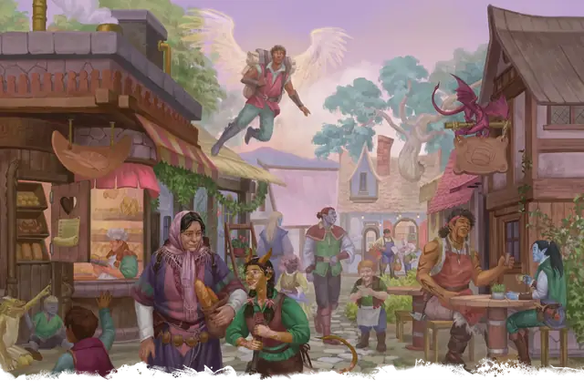

Обыватель
Commoner
Средний или Маленький Гуманоид, Нейтральный

Класс Защиты 10 Инициатива +0 (10)
Хиты 4 (1к8)
Скорость 30 футов
| мод | спас | ||
|---|---|---|---|
| СИЛ | 10 | +0 | +0 |
| ЛОВ | 10 | +0 | +0 |
| ТЕЛ | 10 | +0 | +0 |
| мод | спас | ||
|---|---|---|---|
| ИНТ | 10 | +0 | +0 |
| МДР | 10 | +0 | +0 |
| ХАР | 10 | +0 | +0 |
Чувства пассивное Восприятие 10
Языки Общий
Опасность 0 (10 опыта; БВ +2)
Особенности
Обученность. У обывателя есть владение одним навыком на выбор Мастера, и он совершает с Преимуществом проверки характеристик с этим навыком.
Действия
Дубинка. Бросок рукопашной атаки: +2, досягаемость 5 фт. Попадание: 2 (1к4) Дробящего урона.
Бонус мастерства +2
Среда обитания Любая
Сокровища Личные